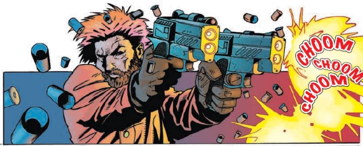

Spinning off from the Devlin Waugh epic sequence of Chasing Herod, Reign of Frogs and Sirius Rising, this follows a squad of Vatican occult operatives ... in space!
Art by Nigel Raynor & D'Israeli
| Story Title | Parts | Pages | w indicates a wraparound coverCovers | Year(s) | Issues | Writer | Artist | Colourist | Letterer |
|---|---|---|---|---|---|---|---|---|---|
| [Fast Breeder] | 5 | 25 | 1186: Mark Harrison 1 | 2000 | Reprints: M281 (supplement)1184-1188 | John Smith | Nigel Raynor | D'Israeli | Tom Frame |
| Alien Sex Fiend | 6 | 30 | 1251: Doug A. Gregory 1 | 2001 | Reprints: M281 (supplement)1251-1256 | John Smith | Steve Yeowell | Chris Blythe | Tom Frame |
| year | episodes | pages |
| 1990 | 0 | 0 |
| 1991 | 0 | 0 |
| 1992 | 0 | 0 |
| 1993 | 0 | 0 |
| 1994 | 0 | 0 |
| 1995 | 0 | 0 |
| 1996 | 0 | 0 |
| 1997 | 0 | 0 |
| 1998 | 0 | 0 |
| 1999 | 0 | 0 |
| 2000 | 5 | 25 |
| 2001 | 6 | 30 |
| 2002 | 0 | 0 |
| 2003 | 0 | 0 |
| 2004 | 0 | 0 |
| 2005 | 0 | 0 |
| 2006 | 0 | 0 |
| 2007 | 0 | 0 |
| 2008 | 0 | 0 |
| 2009 | 0 | 0 |
| 2010 | 0 | 0 |
| 2011 | 0 | 0 |